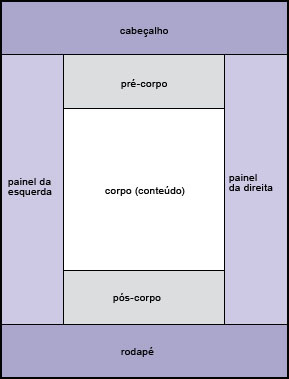
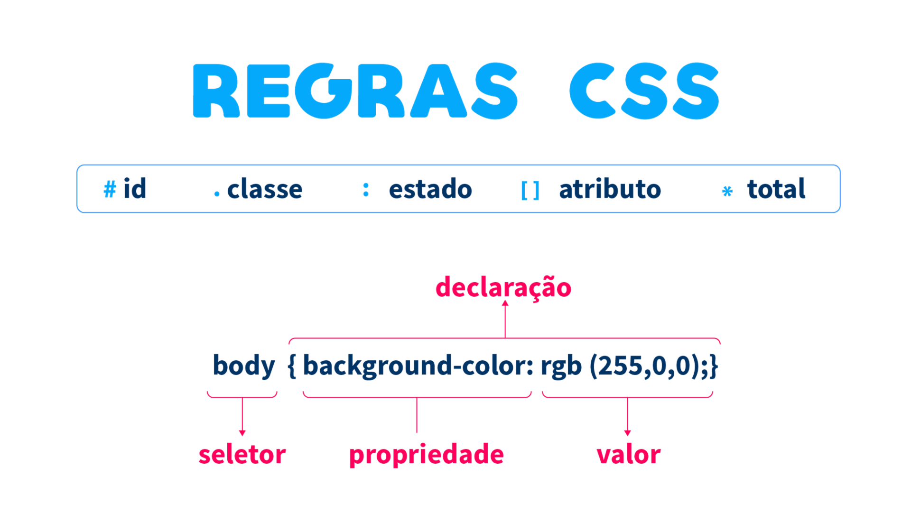

1. Estrutura Básica do HTML
A estrutura básica de um site HTML começa com as tags principais, como <html>, <head>, <body>, entre outras. Veja um exemplo abaixo:
<!DOCTYPE html>
<html lang="pt-BR">
<head>
<meta charset="UTF-8">
<meta name="viewport" content="width=device-width, initial-scale=1.0">
<title>Meu Site</title>
</head>
<body>
<h1>Bem-vindo ao meu site</h1>
<p>Este é um exemplo de site básico.</p>
</body>
</html>

2. Definindo Cabeçalhos
A tag <h1> até <h6> é utilizada para definir cabeçalhos, sendo que o <h1> é o título principal da página. Aqui está um exemplo:
<h1>Título Principal</h1>
<h2>Subtítulo</h2>
<h3>Subtítulo 2</h3>
3. Trabalhando com Parágrafos
A tag <p> é usada para definir parágrafos. Veja como ela funciona:
<p>Este é um parágrafo no HTML. Ele é utilizado para separar e organizar o conteúdo textual.</p>

4. Inserindo Imagens
Para adicionar imagens no seu site, usamos a tag <img> com o atributo src para indicar o caminho da imagem. Exemplo:
<img src="imagem.jpg" alt="Descrição da imagem">
5. Estilizando com CSS
O CSS é utilizado para estilizar a página HTML. Veja um exemplo simples de como mudar a cor do texto:
<style>
p {
color: blue;
}
</style>
Isso mudará a cor do texto dentro de qualquer parágrafo para azul.